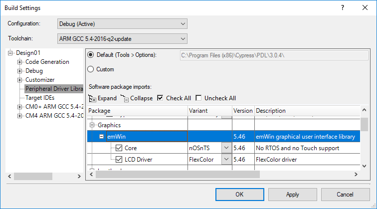

What is emWin
emWin is an embedded graphic library and graphical user interface (GUI) framework designed to provide an efficient, processor- and LCD controller-independent GUI for any application that operates with a graphical display. It is compatible with single-task and multitask environments. Developed by SEGGER Microcontroller, Cypress has licensed the high-performance emWin library from SEGGER and offers it for free to customers. The emWin User & Reference Guide located here.
Supported features
- 2-D Graphics Library
- Displaying bitmap files
- Fonts
- Memory Devices
- Multitask (RTOS)
- Window Manager
- Window Objects (Widgets)
- Virtual Screens / Virtual Pages
- Pointer Input Devices
- Touch screen support (user defined)
- Sprites and Cursors
- Antialiasing
- Language Support
- Multi-codepages support
- Unicode support
- Right to left- and bidirectional text support
- Drivers
- Compact Color
- Flex Color
- BitPlains
- Control - Cypress custom driver for GraphicLCDCtrl Component to support displays without controller and VRAM.
How to use emWin with the PDL
When enabling emWin you have the following choices:
- Core – defines RTOS or Touchscreen support. Available options:
| Option | OS | Touch Screen |
| nOSnTS | NO | NO |
| nOSTS | NO | YES |
| OSnTS | YES | NO |
| OSTS | YES | YES |
- Display Driver – defines different display support. Available options: FlexColor, CompactColor_16, BitPlains, Control. For details about display drivers refer to Chapter 33 Display drivers of emWin User & Reference Guide.
Make your choices in the Build Settings window as shown below.
- For PSoC Creator , software packages settings are located at Project > Build Setting > Peripheral Driver Library. Enable emWin in the PDL pack settings, and choose the following options: OS and Touch support, Display Driver. For PSoC Creator, software packages settings located at Project > Build Setting > Peripheral Driver Library:

Figure 1. emWin settings
- Choose a display interface for communicating with the display. For PSoC Creator, you can place the desired interface Component like GraphicLCDIntr, GraphicLCDCntrl, SPI, or I2C in the TopDesign schematic and configure it with the Component customizer. Alternatively, you can implement a custom interface.
- Generate the application code. All configuration files will be added to your project.
- Specify the LCD resolution, color conversion, and other required LCD settings in the LCDConfig.c file.
- Modify the emWin config files for the required display driver interface access functions:
- CompactColor_16 driver: specify the LCD_WRITE... and LCD_READ... macros of the LCDConf_CompactColor_16.h file. For example, to initialize the GraphicLCDIntf Component in 8-bit mode:
#define LCD_USE_PARALLEL_16 0
#define LCD_WRITEM_A1(p, Num) GraphicLCDIntf_WriteM8_A1(p, Num)
#define LCD_WRITEM_A0(p, Num) GraphicLCDIntf_WriteM8_A0(p, Num)
#define LCD_READM_A1(p, Num) GraphicLCDIntf_ReadM8_A1(p, Num)
#define LCD_WRITE_A0(Data) GraphicLCDIntf_Write8_A0(Data)
#define LCD_WRITE_A1(Data) GraphicLCDIntf_Write8_A1(Data)
- FlexColor driver: specify the list of the LCD interface access functions in the LCD_X_Config() function (LCDConfig.c file). For this, modify the GUI_PORT_API PortApi structure passed as the pointer to GUIDRV_FlexColor_SetFunc(). For example to initialize the GraphicLCDIntf Component in 8-bit mode:
GUI_PORT_API PortAPI = {0};
…
PortAPI.pfWrite8_A0 = GraphicLCDIntf_Write8_A0;
PortAPI.pfWrite8_A1 = GraphicLCDIntf_Write8_A1;
PortAPI.pfWriteM8_A1 = GraphicLCDIntf_WriteM8_A1;
PortAPI.pfRead8_A1 = GraphicLCDIntf_Read8_A1;
PortAPI.pfReadM8_A1 = GraphicLCDIntf_ReadM8_A1;
GUIDRV_FlexColor_SetFunc(pDevice, &PortAPI, LCD_CONTROLLER, GUIDRV_FLEXCOLOR_M16C0B8);
- BitPlains driver: only manage the content of the bit plains. It does not contain any display controller specific code. Implement your own display access and update routines.
- Control driver: No modification is needed. Instead, set all required display parameters in GraphicLCDCntrl Component customizer.
- Note
- This driver is only available in PSoC Creator and can be used only with the GraphicLCDCtrl Component.
- Insert the initialization code for the display interface and the display driver IC in the _InitController() function of the LCDConf.c configuration file.
- Include GUI.h header in your source file.
- Call the GUI_Init() function to start emWin.
- Call the drawing function.
emWin Example Projects
Segger provides many examples of emWin usage. These examples are in the <PDL installation directory>/middleware/emWin/sample directory. To run an example:
- Add one of the demo sample files to your project.
- Edit the main source file (main.c) to include GUI.h. Enable interrupts and then call MainTask() as shown in the code that follows. All of the emWin examples use MainTask() as the entry point.
#include "project.h"
#include "GUI.h"
int main()
{
__enable_irq();
MainTask();
for(;;)
{
}
}
- Build and run the project.